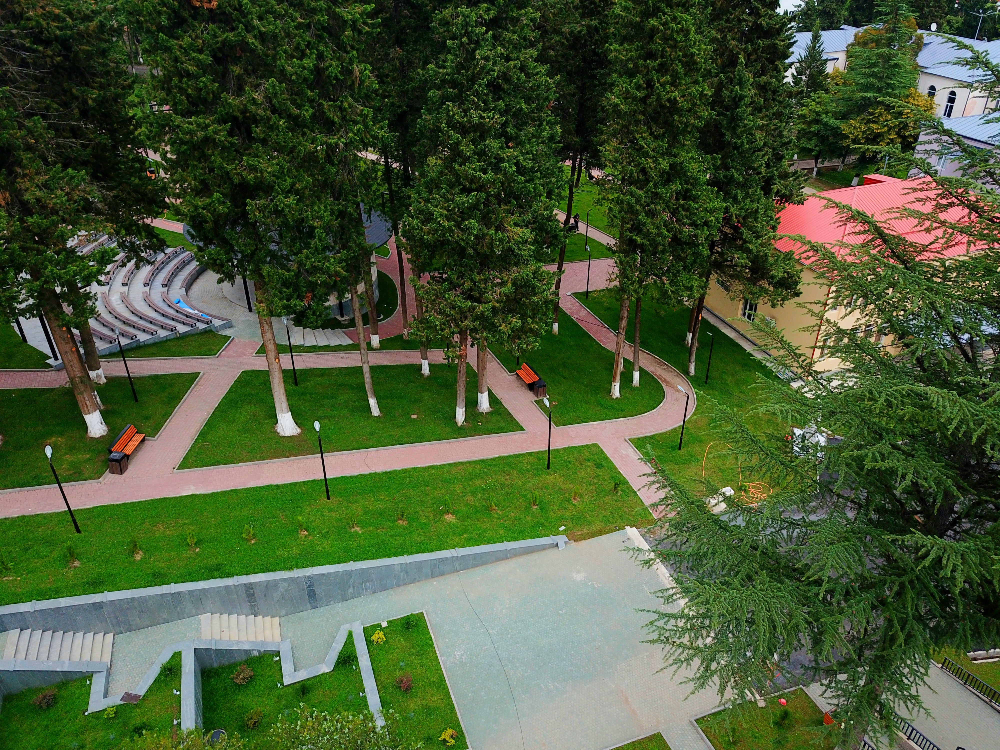

გილოცავთ
თერჯოლობას!
⚜️
ოქროსფერი შემოდგომის, ბარაქის, იმერული სტუმართმოყვარეობისა და ტრადიციების სახალხო დღესასწაული
მოსაწვევის ნახვაგიწვევთ
31 ოქტომბერს თერჯოლაში ტრადიციული სახალხო დღესასწაული — „თერჯოლობა 2026“ გაიმართება.
სახალხო დღესასწაულის ფარგლებში, სხვადასხვა კულტურული, შემეცნებითი, სპორტული და გასართობი ღონისძიებები ჩატარდება.
სადღესასწაულო პროგრამა
31 ოქტომბერი • დღის განრიგი
🕛 12:00 საათი
ლაშა გოგიაშვილის სახელობის მინი ფეხბურთის ტურნირის ფინალი, გამარჯვებული გუნდების დაჯილდოება
📍 მინი სტადიონი, რუსთაველის ქუჩა #109
🕛 12:00 საათი
საზეიმო კონცერტი ახალგაზრდების მონაწილეობით
📍 მერიის წინ
🕛 12:00 საათი
სახანძრო-სამაშველო და თავდაცვის ძალების ტექნიკის პრეზენტაცია
📍 მერიის მიმდებარედ
🕧 12:30 საათი
შემოქმედებითი კუთხეები და საგამოფენო სივრცე
ტურიზმის, ხელნაკეთი ნივთების, რეწვის ოსტატების, ნორჩ მხატვართა ნამუშევრების გამოფენები.
მასტერკლასები და ვორქშოფები: ჩატარდება ჩურჩხელის ამოვლების, თონეში პურის ცხობისა და ყურძნის დაწურვის მასტერკლასები, აგრეთვე თექის თელვის ვორქშოფი, ქართული ჭიდაობის შეჯიბრი.
მასტერკლასები და ვორქშოფები: ჩატარდება ჩურჩხელის ამოვლების, თონეში პურის ცხობისა და ყურძნის დაწურვის მასტერკლასები, აგრეთვე თექის თელვის ვორქშოფი, ქართული ჭიდაობის შეჯიბრი.
📍 მერიის მიმდებარე ტერიტორია
🕐 13:00 საათი
მოსწავლე-ახალგაზრდობის მუნიციპალური ცენტრის ღონისძიება
📍 ლაშა გოგიაშვილის სახელობის სკვერი, ამფითეატრი
🕜 13:30 საათი
ქუჩის თეატრალური წარმოდგენები და საზეიმო მსვლელობა
მოსიარულე ორკესტრი (საზეიმო ბენდი), საბავშვო შოუ-პროგრამები და საზეიმო მსვლელობა თერჯოლის ქუჩებში ცხენოსნებითა და ფაიტონით, მეარღნის თანხლებით.
🕑 14:00 საათი
გასართობი სივრცეები და ფოტოზონები
სახის მოხატვა, ინტერაქტიული ფოტო-სარკე (Photo Mirror), ფოტო-ვიდეოს გადაღება Gifit აპარატით, თემატური ფოტოზონები, მრავალფეროვანი საბავშვო ატრაქციონები.
📍 მერიის მიმდებარე ტერიტორია
🕑 14:00 საათი
ქავერ ბენდი „The Vibe“
📍 მერიის წინ
🕝 14:30 საათი
ეთნოგრაფიული კუთხეები და იმერული სამზარეულო
სამეწარმეო მარკეტი, საუკეთესო ღვინის ძიება, იმერული სამზარეულო, ეთნოგრაფიული კუთხეები, საოჯახო მარნები, კულინარიული მასტერკლასები.
📍 მერიის მიმდებარე ტერიტორია
🕓 16:00 საათი
კონცერტი ადგილობრივი შემოქმედებითი ანსამბლების მონაწილეობით
📍 მერიის წინ
🕠 17:30 საათი
საპატიო თერჯოლელების, საუკეთესო ღვინის და წარმატებული სპორტსმენების დაჯილდოება
🕖 19:00 საათი
🌟 დასკვნითი გალა კონცერტი ნატო გელაშვილისა და „ჭოხოების“ მონაწილეობით, საზეიმო ფოიერვერკი!
📍 მერიის წინ
ჩვენი მშვენიერი თერჯოლა
შემოდგომის ფერებით შემკული იმერეთი

🏛️ ქალაქი თერჯოლა

🍇 ღვინისა და ტრადიციების მხარე

🍁 ოქროსფერი შემოდგომა
დღესასწაულამდე დარჩენილია
00
დღე
00
საათი
00
წუთი
00
წამი